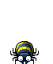

Lv. 23 · #2230103
트릭스터
거미 형태를 한 작은 몬스터이다. 시간의 균열이 생길 때 다른 차원에서 장난감 성으로 들어왔다고 하며 성공격에는 강하지만 불에는 약하다. 여기저기 거미줄을 쳐놓는 습성이 있어, 트릭스터가 많은 건물 안을 다닐 때는 조심해야 한다.
스탯
레벨 23- HP
- 450
- MP
- 0
- EXP
- 42
- 넉백 가능 데미지
- 0+
- 물리 데미지
- 95
- 마법 데미지
- 0
- 물리 방어력
- 52
- 마법 방어력
- 65
- 속도
- 0
- 23레벨 에서의 필요 명중
- 36.66
- 메소
- 172.5
- 속성관계
- 성속성반감 불속성약점
- 체경비
- 10.71
- 형태
- 무기물형
출현 지역
출현 맵 9개맵 이름을 누르면 메이플노트의 맵 정보가 열립니다.
드롭 테이블
전체 25개| 아이템 | 아이템 ID | 드롭 확률 |
|---|---|---|
| 거미줄 | 4000097 | 50% |
| 주황 포션 | 2000001 | 1% |
| 파란 포션 | 2000003 | 1% |
| 매직박스의 열쇠 | 4031072 | 1% |
| 활전용 화살 | 2060000 | 0.8% |
| 석궁전용 화살 | 2061000 | 0.8% |
| 전사의 알약 | 2002006 | 0.3% |
| 아다만티움의 원석 | 4010003 | 0.3% |
| 트릭스터 오목알 | 4030016 | 0.3% |
| 행운의 크리스탈 원석 | 4004003 | 0.08% |
| 태극부채 | 1332020 | 0.01% |
| 발란쉐 | 1462003 | 0.01% |
| 수비 표창 | 2070000 | 0.01% |
| 빨간색 별 두건 | 1002020 | 0.01% |
| 블루 도로스 로브 | 1050023 | 0.01% |
| 미스릴 도끼 | 1312003 | 0.008% |
| 레드 사바타 | 1082017 | 0.008% |
| 일룬 | 1302003 | 0.008% |
| 알루미늄 야구 방망이 | 1402010 | 0.008% |
| 귀 장식 행운 주문서 100% | 2040319 | 0.007% |
| 너클 공격력 주문서 10% | 2044802 | 0.007% |
| 방패 방어력 주문서 100% | 2040900 | 0.004% |
| 브라운 스키디 샌들 | 1072288 | 0.003% |
| 브라운 스키디 샌들 | 1072288 | 0.0018% |
| 브라운 우든크라그 | 1072291 | 0.0013% |
조건에 맞는 드롭 아이템이 없습니다.
확률은 메이플노트에 게시된 값입니다. 아이템 이름을 누르면 원본 아이템 정보가 열립니다. 과거 버전 데이터이므로 실제 메이플랜드와 다를 수 있습니다.